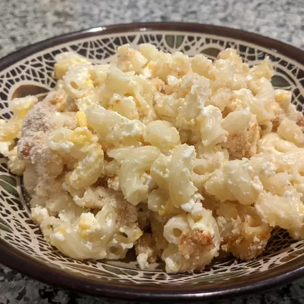

Macaroni and Cheese

Macaroni and Cheese recipe
This recipe is a family favorite in my home. It is one of the most delectable Macaroni and Cheese dishes I have ever eaten.
It is fantastic, and yes I need to drag this out to make it an actual paragraph.
Ingredients:
- 1 (16 ounce) package uncooked elbow macaroni
- 3 (8 ounce) containers cottage cheese
- 1 (16 ounce) container sour cream
- 3 eggs
- 2 cups shredded sharp Cheddar cheese
- 1/4 teaspoon cayenne pepper
- 1 teaspoon paprika
Steps:
- Preheat oven to 350 degrees F (175 degrees C). Grease a 9x13 inch baking dish
- Bring a large pot of lightly salted water to a boil. Add pasta and cook for 8 to 10 minutes or until al dente; drain.
- In a large bowl combine cooked pasta, cottage cheese, sour cream, eggs, Cheddar cheese, and cayenne pepper.
Mix well and transfer to prepared dish. Sprinkle with paprika.
- Cover loosely with aluminum foil and bake 40 minutes.